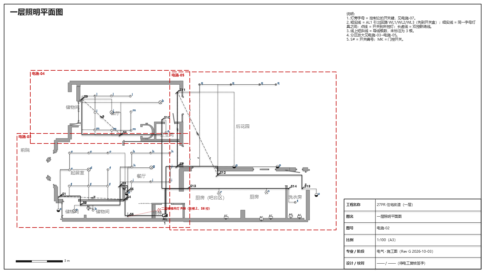

照明
灯、开关、联动、照明回路。点开关试灯，点灯看它从配电箱到开关再到灯的整条线路。显示方案 A 的 4 路照明。

插座 / 动力
每个插座、电器（烤箱、冰箱、洗碗机、洗衣烘干、电梯、充电桩）属于哪一路。勾「灯」可以同时看照明分路。点一路只看这一路。
配电箱 AL1 · 方案对比
两个方案并排：路数、配电箱型号、备用位、材料估算、优缺点；下面是所选方案的单线图和回路表。
照明施工图（PPT）
英式 / 国标两套，按方案 A 的照明出图。
3D 漫游
在房子里走、开门，和这些图纸是同一版户型。
资料 / 源文件
数据、出图脚本、修改记录（README、工作流程说明）。
规格为建议值，回路划分、配电箱位置需要电工按 BS 7671 / Part P 复核。